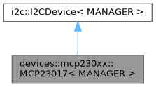
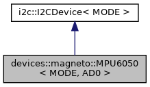
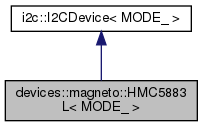

There are plenty of devices of all kinds, based on I2C interface, that you may want to connect to your Arduino or a board you created with an AVR ATmega or ATtiny MCU.
If you want to learn more about I2C concepts and vocabulary, you can find further information on Wikipedia.
Unfortunately, FastArduino obviously cannot provide specific support for all existing I2C devices.
However, based on a given device datasheet, it can be quite easy to add a FastArduino driver for any I2C device.
FastArduino provides all the necessary classes and methods for you to implement such a specific driver.
The following sections describe the FastArduino API for I2C device driver implementation, and list the steps to successfully implement such a driver.
FastArduino I2C driver API
The generic support for I2C device driver in FastArduino looks quite simple, it is entirely embedded in one class, i2c::I2CDevice; this is a template class which all actual I2C device drivers shall derive from.
This template class has only one MANAGER parameter, which must be kept as is in all subclasses; this represents the type of I2C Manager used to handle the I2C bus and operations.
The i2c::I2CDevice class mainly contains protected types aliases and methods to create and launch read and write commands to a device on the I2C bus.
Any FastArduino I2C device must be able to work in both asynchronous and synchronous modes The i2c::I2CDevice API is made for asynchronous operations; synchronous flavours of a specific device API are based on asynchronous implementations of that API (just awaiting for the operation to finish).
As you can see in the following diagrams, the drivers for I2C devices currently supported by FastArduino directly derive from i2c::I2CDevice:
- DS1307 Real Time Clock chip

- MCP23008 8-Bit I/O Expander chip

- MCP23017 16-Bit I/O Expander chip 
- MPU6050 3D Accelerometer-Gyroscope chip 
- HMC5883L 3D Compass chip 
Creating a new driver for an I2C device must follow these steps:
- Create a
i2c::I2CDevicetemplate subclass; let's call itMyI2CDevicein the rest of this page. - Redefine (as
private) the following type aliases inherited fromi2c::I2CDevice:PARENT,PROXY,FUTURE - Add a
publicconstructor with one argument:MyI2CDevice::MyI2CDevice(MANAGER& manager)whereMANAGERis a class template argument of bothMyI2CDeviceandi2c::I2CDevice; this constructor must call the inherited constructor and pass it 3 arguments:manager, the default I2C address for your device, and finally, one ofi2c::I2C_STANDARDori2c::I2C_FASTconstants, to indicate the best mode (highest I2C frequency) that you device can support. - List the API you need to provide to the end user of your device (based on the device datasheet)
- For each
publicAPI you need to provide, define a specific Future to hold values written to the device, as well as values later read from the device. Each defined Future shall derive fromFUTURE(type alias defined above). This future will allow asynchronous execution of the API. FastArduino guidelines for I2C devices suggest to name the future class according to the API name itself e.g.SetDatetimeFuturefor theset_datetime()API. - For each
publicAPI, define a method that takes aPROXYto the future defined above and return anint. The implementation of this method is based on mainly 3 inheritedprotectedmethods:i2c::I2CDevice.read(),i2c::I2CDevice.write()andi2c::I2CDevice.launch_commands() - For each
publicAPI, also define a similar method (same name) with a synchronous flavour. That method will directly take "natural" arguments (no futures) as input or output (reference), and return aboolto indicate if API was performed without any error.
I2CDevice API
Before describing FastArduino I2C Device API, it is important to mention that this API is heavily based on FastArduino future API, which concepts shall be first understood before starting to build your own support for an I2C device.
Subclassing i2c::I2CDevice gives MyI2CDevice access to all low-level protected aliases:
PARENT: this is simply defined asi2c::I2CDevice<MANAGER>and is useful for accessing next aliasesi2c::I2CDevice::PROXY: this is the type of lifecycle proxy used byMANAGER; it must be used for all asynchronous API ofMyI2CDeviceto embed actual Future typesi2c::I2CDevice::FUTURE: this is the type of Future used byMANAGER; it must be used for defining your own Future types for all asynchronous API ofMyI2CDevice
Note that to be accessible from MyI2CDevice class, these types must be redefined as follows:
i2c::I2CDevice constructor takes 4 arguments:
MANAGER& manager: this should be passed as is fromMyI2CDeviceconstructoruint8_t device: this is the default I2C address of this device (this 7-bits address must be already left-shifted one bit to leave the LSB available for I2C direction read or write)Mode<MODE> mode(MODEis a template argument of the constructor,i2c::I2CMode MODE): this should be passed one of 2 constantsi2c::I2C_FASTori2c::I2C_STANDARD) to indicate the best I2C mode (highest frequency) supported byMyI2CDevice: this will impact whatMANAGERtype can be used when instantiatingMyI2CDevicetemplatebool auto_stop: this defines whether all chains of commands ofMyI2CDeviceshall automatically be ended with a STOP condition on the I2C bus or not. In most cases, the default (false) should work, but some devices (e.g. DS1307) do not work properly in 2 chains of commands are not separated by a STOP condition.
Note that device address must be provided at construction time but can optionally be changed later. Regarding its I2C address, typically an I2C device falls in one of the following categories:
- it has a fixed I2C address that cannot be changed (e.g. DS1307 RTC chip)
- it has an I2C address that can be changed by hardware (e.g. jumpers) among a limited range of possible addresses (e.g. MCP23017 I/O expander chip, MPU 6050 acceleromete/gyroscope chip)
- it has a fixed I2C address that can be changed by software (e.g. VL53L0X "micro lidar" chip); this is generally harder to support.
For devices in category 1, you would typically define the address as a constant in MyI2CDevice and pass it directly to i2c::I2CDevice constructor.
Here is a snippet from DS1307 device:
For devices in category 2, you would rather define an enum class limiting the possible addresses configurable by hardware, or pass the address (as uint8_t) to the driver class constructor.
For devices in category 3, you would first define the fixed address as a constant, then define an API to change it (as a data member of MyI2CDevice).
Subclassing i2c::I2CDevice gives MyI2CDevice access to all low-level protected methods:
i2c::I2CDevice.read(uint8_t read_count, bool finish_future, bool stop): create a command to read bytes from the I2C device; read bytes will be added to the related Future (passed tolaunch_commands())i2c::I2CDevice.write(uint8_t write_count, bool finish_future, bool stop):create a command to write bytes to the I2C device; written bytes are taken from the related Future (passed tolaunch_commands())i2c::I2CDevice.launch_commands(PROXY<> proxy, initializer_list<> commands): prepare passed read/writecommandsand send them toMANAGERfor later asynchronous execution (commands are queued); theFuturereferenced byproxyis used to provide data to write to, and store data to read from, the I2C device.i2c::I2CDevice.set_device(uint8_t device): change the I2C address of this device. This is useful for devices that allow changing their I2C address by software.i2c::I2CDevice.resolve(PROXY<T> proxy): this method must be used when you need to resolve aPROXYpassed to one of your API, in order to access some parts of its proxied Future. This method is seldom used.i2c::I2CDevice.make_proxy(const T& target): this method must be used in your synchronous API, in order to "proxify" a local Future before calling the related asynchronous API.
Note that read() and write() methods do not actually perform any I2C operation! They only prepare an I2C read or write command (i2c::I2CLightCommand type embedding necessary information) based on their arguments:
read_count/write_countspecify the number of bytes to read or write. When0(the default), this means that all bytes (as defined in the specific Future) will be read or written.finish_future: specify that, after this command execution, the Future assigned to the current transaction will be marked as finishedstop: specify that, after this command execution, an I2C STOP condition will be generated on the I2C bus; this will automatically trigger a "START" condition on the next command (whether it is part of the current chain of commands or not)
The launch_commands() method does the actual work:
- with a synchronous I2C Manager, it blocks until all commands get executed or an error occurs; the assigned Future is directly
READY(or inERROR) when the method returns - with an asynchronous I2C Manager, it enqueues all commands for asynchronous execution and returns immediately; the assigned Future will be later updated (it status will become either
READYorERROR) once all commands are complete.
I2C Bus handling
Handling of the I2C bus by the I2C Manager and the I2CDevice follows standard I2C protocol, with some level of "intelligence".
In usual conditions: launch_commands() can execute long chains of commands on one device:
- The first command in the chain will generate a "START" condition on the I2C bus as required by the I2C protocol
- By default, all following commands will be preceded by a "REPEAT START" condition on the I2C bus
- By default, the last command in the chain will not end with a "STOP" condition on the bus; FastArduino I2C Manager will keep the I2C bus for itself, unless required otherwise by I2C devices implementation.
This default behaviour allows your I2C device API implementation to perform a sequence of calls to the I2C device, where the first call will acquire the bus, and all following calls in between will not need to acquire the bus.
You can change the default for each command or for a whole device:
- at command level, by setting
stopargument totrue, which will produce a "STOP" condition at the end of that command and a "START" condition on the next command in the chain. - at device level, by setting
auto_stopconstructor argument totrue; then all chains of commands for the device will always end with a STOP condition.
IMPORTANT: Actually, asynchronous flavours of I2C Managers will release the I2C bus at the end of an I2C transaction, in case there is no more pending command (from another I2C transaction) in the commands queue.
API Typical Example
For many I2C devices, communication is based on writing and reading "registers", each device having its own list of specific registers. Hence most I2C device drivers API will consist in reading or writing one register.
In FastArduino, drivers like devices::mcp230xx::MCP23008 first define private generic Future classes, later used by specific API to read registers:
In this snippet, a base Future, ReadRegisterFuture, is defined. It will serve as a base class for all specific Futures needed by all API reading registers, like in the following excerpt from MCP23008 device:
In the above code, the only added value of GetValuesFuture class is to embed the GPIO register address; this allows callers of the values() API to directly instantiate this Future without further input.
The implementation of values() is a one-liner that requires a few explanations:
launch_commands()has only 2 arguments:futurethat is directly passed from the API argument, and a list of commands (embedded within braces)- in this example, there are only 2 commands; the first, returned by
write(), writes all input content offuture, i.e. theGPIOregister address (single) byte); the second command, created byread(), reads enough bytes (only one here) from the decice to fill the output offuture. - both commands are created with default calls to
read()andwrite()i.e.0for bytes count (special meaning: use full content size offuture),falseforfinish_futureandstop, leading to generation of "START" condition at the beginning, and no STOP forced at the end.
A similar approach is used for writing a value to a device register and will not be detailed here.
Debugging support for a new device (low-level)
In general, before developing a full-fledged driver for an I2C device, you need to learn how to use that device.
Based on the device datasheet, you first learn how to manipulate the device through the I2C bus.
For better understanding, you generally use a debugging example that helps demonstrate how the device works.
One easy way to develop such a debugging sample is to create a program with just one source code file containing:
- proper
#includedirectives - a
PublicDeviceclass that derives fromi2c::I2CDevicebut declaresmain()as afriend, which allows direct calls, frommain(), toprotectedAPI ofi2c::I2CDevice, for easy testing - directly call SPI API on a
PublicDeviceinstance, frommain()and trace results to a console, through UART - use, as I2C Manager,
I2CSyncDebugManagerorI2CSyncDebugStatusManager, which allow tracing (live or later) all steps of I2C transactions
FastArduino includes such a debugging sample in examples/i2c/I2CDeviceProto example, copied hereafter:
This example is just an empty skeleton for your own tests. It is made of several parts:
Those lines include a few headers necessary (or just useful) to debug an I2C device.
Any specificity of the tested I2C device is defined as a constant in the next code section. Note the definition of DEVICE_ADDRESS constant: this 7-bit I2C device address is shifted one bit left as an 8th bit will be added (I2C communication protocol) to define data direction for each transmission.
This section defines various types aliases, for I2C Manager, I2C debugger, and types used as part of device API definition. In addition, a DEBUG macro to debug all I2C steps after API execution is defined.
Then an output stream is created for tracing through UART, and the necessary UART ISR is registered.
This is where we define a utility class to debug our I2C interface to the tested device. PublicDevice class does nothing but making all protected methods callable from main(), so that we can directly perform our code tests in main(), without thinking much about proper API design now.
This is the main() function where it all happens. First we initialize the MCU and the UART for tracing.
Here we simply initialize I2C function on the UNO.
We then declare the device variable that we will use for testing our I2C device.
Finally the rest of the code is placeholder for any initialization API, followed by an infinite loop where you can call lauinch_commands/read/write methods on device in order to test the way to handle the target device.
Defining the driver API based on device features
At this level, you have already been able to debug how the device works and you have a good overview of what features you want to provide to developers (and to yourself as the first of all) who will want to use this device.
An easy way is to provide an API that maps every feature found in the datasheet to its dedicated method. This is what we would call a low-level API; that is the minimum your driver should provide.
Additionally MyI2CDevice might implement a higher level API, based on the low-level one, but this is not mandatory; actually, this is not even advised generally, as this high-level API might be implemented in a distinct class. Using a separate class for high-level API allows other developers to develop their own high-level API without having to use yours if it does not fit their needs.
It is often advised to add begin() and end() methods to MyI2CDevice when it makes sense. begin() would initialize the device before usage (most devices will require special setup before use).
Implementing the driver API
This step consists in implementing the API defined in the step before.
Typically every API will be made of:
- a specific Future class taht encapsulates input arguments (in its constructor) and holds place for output; this Future shall embed any necessary conversion of input arguments if needed, as well as conversion of output, through override of
get()method - one asynchronous method taking as only argument
PROXYto the Future defined above, callinglaunch_commands()withewrite()andread()calls to prepare I2C commands, as described above in the description ofi2c::I2CDeviceAPI - one synchronous method taking same arguments as Future constructor defined above, plus a reference argument for any output; this method instantiates the above Future, calls the asynchronous method defined before, and awaits the Future to be ready and get its output
Here is a concrete example from devices::rtc::DS1307, another I2C device driver in FastArduino.
The first snippet below defines a specific Future for getting current datetime from the device:
In this code, tm is a strcuture to hold all parts of a datetime.
The constructor takes no argument: it just passes TIME_ADDRESS constant to the superclass.
Note the overridden get() method, necessary to convert raw datetime data read from the device, to properly formatted data, usable by the caller program.
The second snippet shows the asynchronous API method:
In this code, one read and one write commands are generated and sent to the I2C Manager for execution (immediate or deferred, depending on the I2C Manager associated to the device); the write command writes all bytes from GetDatetimeFuture, i.e. one byte; the read command reads as many bytes as expected by GetDatetimeFuture, i.e. one byte. Although not directly visible in this snippet, at the end of the I2C transaction (end of read command), a "STOP" condition is generated, releasing the I2C bus. This seems required by DS1307 device (from experiment) to release the bus between two consecutive transactions. This is why DS1307 device constructor sets auto_stop to true.
The last snippet demonstrates implementation of the synchronous API method:
The implementation is totally based on the asynchronous method: it instantiates a GetDatetimeFuture future, passes it as a PROXY, through PARENT::make_proxy(future) to the asynchronous method. If the asynchronous method fails (return != 0), then we return false immediately; otherwise, we await on future, through the call of future.get(datetime) which is blocked until future is READY or in ERROR.
The last mile: add driver to FastArduino project!
Bravo! You successfully added FastArduino support, in your own project, for a specific I2C device!
The last mile would now consist in adding your valuable work to FastArduino library! You do not have to, of course, but this would be a good way to:
- thank other people who provided FastArduino open source library to you
- feel part of the community
- get feedback on your work, potentially allowing it to be further improved
- share your work with the rest of the world
However, like for a marathon, the last mile can be difficult! In order to run this last mile, you will have to:
- first accept FastArduino Apache License 2.0 for your contribution, or discuss with FastArduino owner for another one, if compatible
- follow FastArduino coding guidelines: this might impose some code rewrite or reformatting
- add API documentation with doxygen: this is mandatory for all
publicmethods, and advised forprotectedones. - add one (or more) usage example and integrate it in the
examples/i2cdirectory; examples must be kept simple but still demonstrate the API usage; example circuits (connection pins) shall be described. These examples can be further used as "tests" before new releases of FastArduino. - optionally develop a tutorial for this device
- prepare and propose a PR to FastArduino project
Important condition: in order to accept merging a PR to FastArduino, I must be able to check it by myself, hence I need to first have the new supported device available on my workbench; I will gladly buy one (or a few) if it is affordable and easy to find.